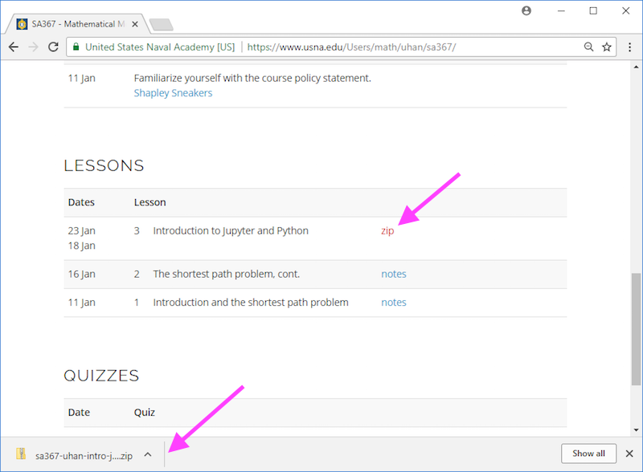
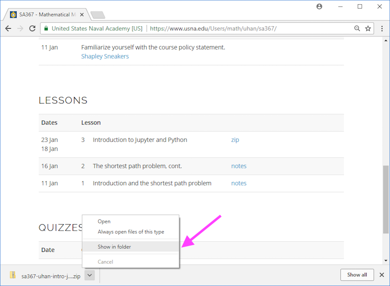
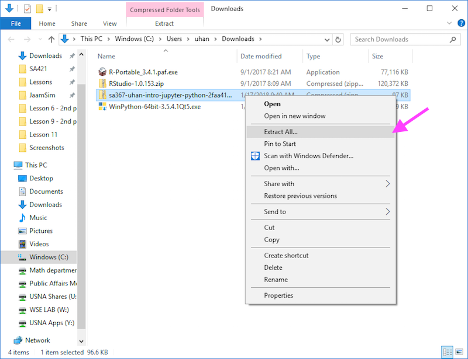
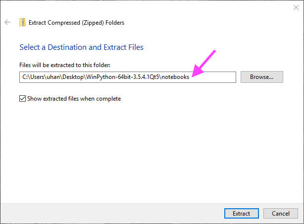
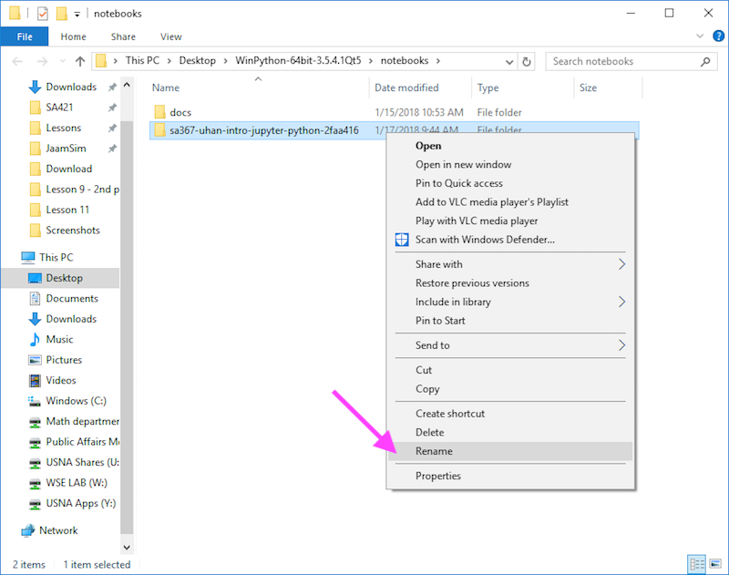
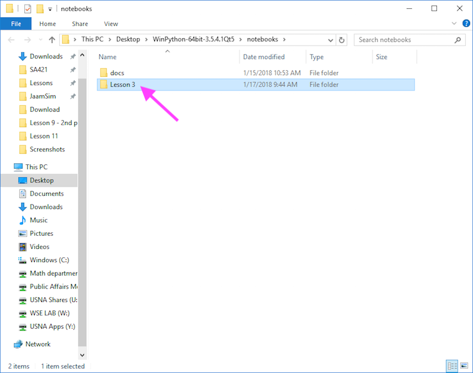

Downloading Jupyter Notebooks
SA367 Spring 2018
Last updated: 17 January 2018
Overview
Here are some instructions on how to download Jupyter notebooks linked on the course website and put them in the right place.
These instructions assume that you're using Google Chrome as your web browser.
Instructions
-
Start by clicking the link for the Jupyter notebook you want to use.
On the course website, these are denoted by zip (for a zip file).
You'll see the file download appear on the bottom of the window.

-
Click on the arrow next to the file download, and select Show in Folder.

-
An Explorer window should appear, highlighting the file you just downloaded.
Right-click the file, and select Extract All...

-
A dialog box should appear, asking where you want to extract the contents of this file.
Click on Browse and select the "notebook" subfolder of your WinPython folder.
Then, click Extract.

-
Once the extraction is done, an Explorer window should appear, showing the contents
of your "notebook" subfolder of your WinPython folder.
Rename the folder to something easy to read.

-
You're done!
Now when you launch Jupyter, you should be able to access the notebook you just downloaded.
